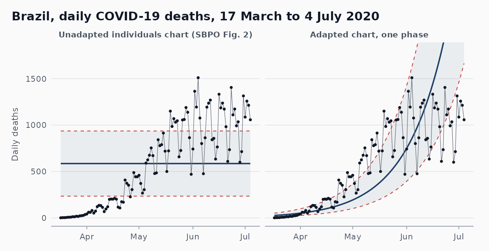
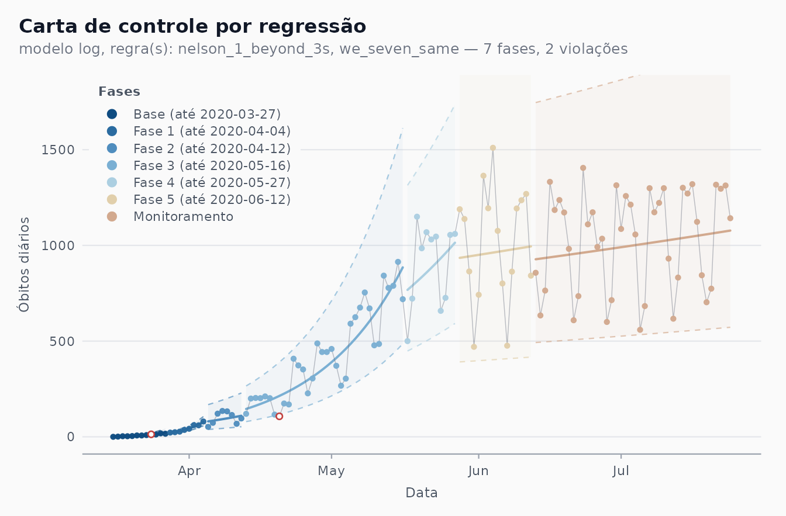
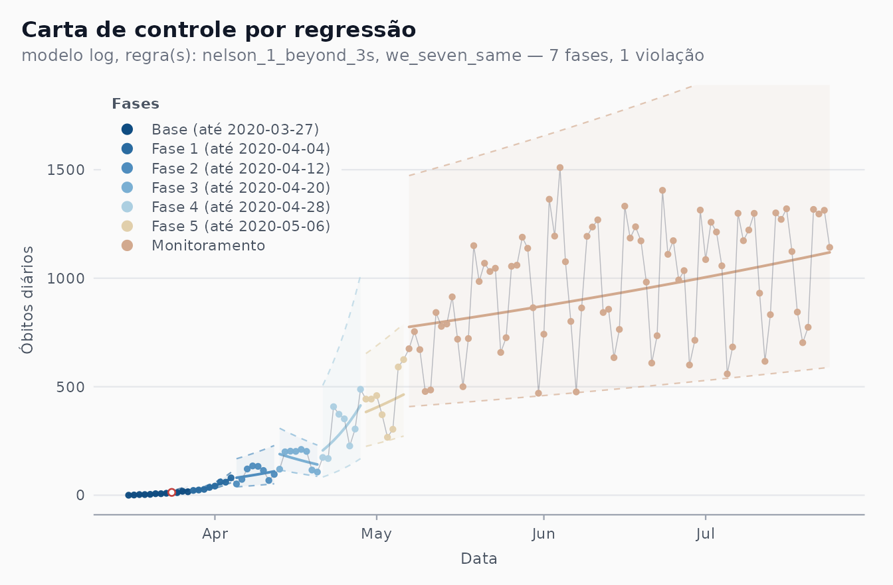
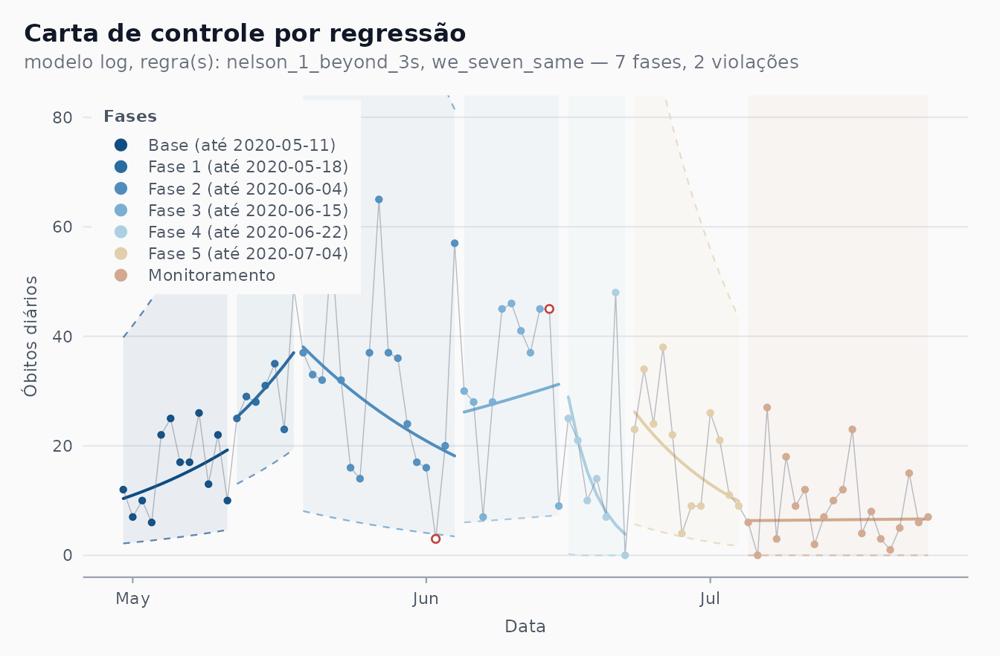
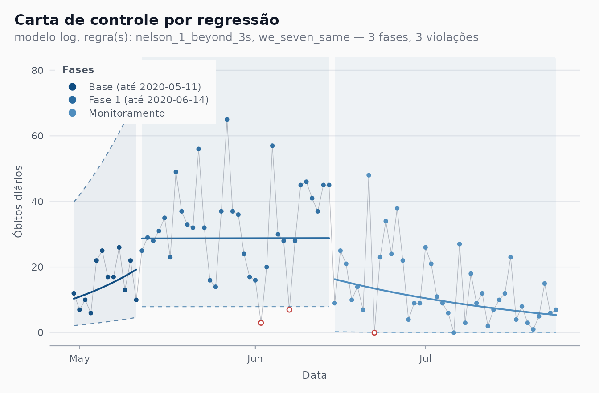
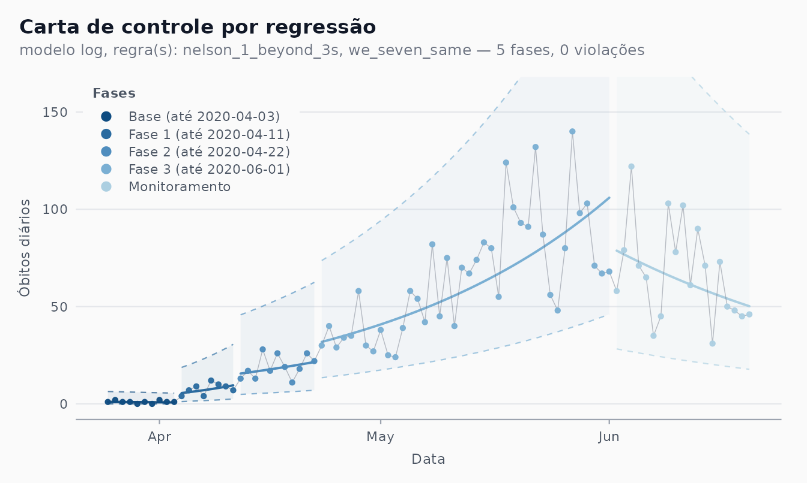
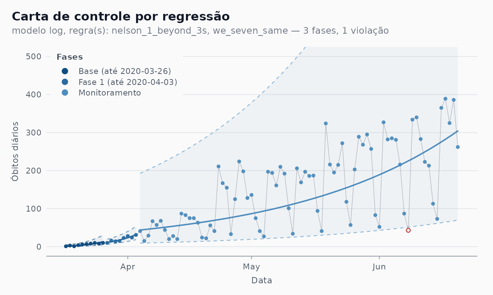
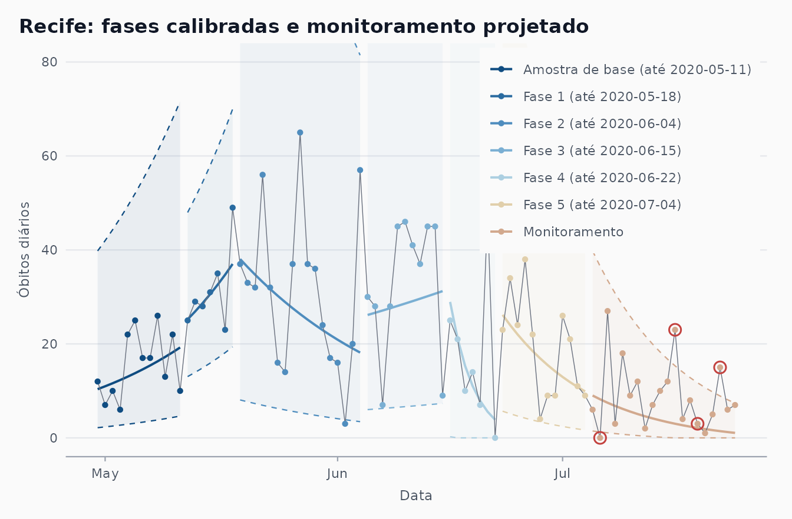

Reproducing the charts of Ferraz et al. (2020)
Source:vignettes/article-charts.Rmd
article-charts.RmdThis article rebuilds, with shewhartr, the Shewhart
charts of the two 2020 papers in which the Castlab team proposed the
adapted chart for COVID-19 mortality. It closes issue
#2. The companion article
vignette("prospective-replay") takes up the “simulation” of
those papers (issue #3).
1. The two articles
SBPO 2020. Ferraz, C., Petenate, A. J., Leite Wanderley, A., Ospina, R., Torres, J. E. M., & Peruzzi Moreira, A. (2020). Gráficos de Shewhart para monitoramento de COVID-19 na cidade de Recife. In Anais do LII Simpósio Brasileiro de Pesquisa Operacional (SBPO 2020), João Pessoa-PB, 3-5 November 2020. A short conference paper with five figures: a generic chart (Fig. 1), the unadapted individuals chart on Brazil’s daily deaths (Fig. 2), the adapted chart for Brazil (Fig. 3), the adapted chart for Recife’s daily deaths (Fig. 4) and one for Recife’s notifications of severe acute respiratory syndrome, SRAG (Fig. 5). Figures 3 and 4 “simulate prospective monitoring” with the seven-point shift rule as the only criterion for a new phase; Fig. 5 uses phases chosen by the team’s experts.
RBE 2020. Ferraz, C., Petenate, A. J., Wanderley, A. L., Ospina, R., Torres, J., & Peruzzi Moreira, A. (2020). COVID-19: monitoramento por gráficos de Shewhart. Revista Brasileira de Estatística, 78(245), 23-41. The journal version: it states the adaptation as an algorithm (section 4, steps i-v), fixes the base at the first 10 days, uses Ministry of Health data up to 20 June 2020 and shows Brazil (Fig. 6), Pernambuco (Fig. 7) and São Paulo (Fig. 8). Both papers build on the hybrid chart of Perla et al. (2020).
2. The adapted chart in package terms
The algorithm of the RBE paper, step by step, and the argument of
shewhart_regression() that implements it:
| Article (RBE, section 4) | shewhart_regression() |
|---|---|
| i. Fit by least squares, one fit per phase |
model = "log": log(1 + y) ~ .N, with
.N the day within the phase. The base of the logarithm
cancels in steps iii-v, so natural logs give the same chart |
| ii. Residuals of that fit | computed on the log scale:
.model_value - .model_center
|
| iii. Individuals chart on the residuals: |
limits_scale = "model" with the default
sigma_method = "mr";
for a least-squares fit with an intercept |
| iv. Fitted line |
limits_scale = "model" builds the band on the log
scale |
| v. Back-transform the centre line and limits | done by limits_scale = "model";
lower_bound = 0 keeps the lower limit at zero |
| First 10 days as the base |
start_base = 10 (automatic detection) |
| New phase after 7 consecutive points on one side of the centre line |
phase_rule = "we_seven_same", flagged with
rules = c("nelson_1_beyond_3s", "we_seven_same")
|
| Phases picked by clicking dates on the web platform |
phase_changes = <dates> (the first day of each
new phase) |
| Last phase projected forward (“Monitoramento”) |
calibrate() up to the last phase, then
monitor() (section 7) |
| Portuguese legend with the end date of every phase |
locale = "pt",
autoplot(phase_dates = TRUE, legend_position = "inside")
|
Two small helpers are used throughout: the first day of every phase, and the axis titles of the articles.
phase_starts <- function(fit) {
a <- fit$augmented
a[[fit$metadata$index_name]][!duplicated(a$.phase)][-1]
}
article_axes <- labs(x = "Data", y = "\u00d3bitos di\u00e1rios")3. Why the chart has to be adapted (SBPO Fig. 2)
SBPO Fig. 2 applies the textbook individuals chart to Brazil’s daily
deaths from the first death, 17 March 2020, over about 110 days: a
constant centre line at Avg = 584.23 with UCL = 932.78 and LCL = 235.67.
The same window in cvd_brazil (17 March to 4 July, 110
days) gives almost the same numbers; the small gap is the data vintage
(section 8).
br_naive <- subset(cvd_brazil, region == "BR" &
date >= as.Date("2020-03-17") &
date <= as.Date("2020-07-04"))
fit_naive <- shewhart_i_mr(br_naive, value = new_deaths, index = date)
fit_naive$augmented |>
slice(1) |>
select(.center, .upper, .lower)
#> # A tibble: 1 × 3
#> .center .upper .lower
#> <dbl> <dbl> <dbl>
#> 1 585. 936. 235.All 31 points of the first month sit below the LCL and 19 of the last
30 above the UCL: the chart reports that an epidemic grows, which nobody
needed a chart for. The adapted chart on the same 110 days (a single
phase, phase_changes = integer(0)) follows the trend
instead. The two are drawn on one scale below.
fit_one <- shewhart_regression(br_naive, value = new_deaths, index = date,
model = "log", limits_scale = "model",
lower_bound = 0,
phase_changes = integer(0))
both <- bind_rows(
fit_naive$augmented |>
transmute(date, .value, .center, .upper, .lower,
panel = "Unadapted individuals chart (SBPO Fig. 2)"),
fit_one$augmented |>
transmute(date, .value, .center, .upper, .lower,
panel = "Adapted chart, one phase")
)
both$panel <- factor(both$panel, levels = unique(both$panel))
sig <- shewhart_palette("signal")
ink <- shewhart_palette("neutral")
ggplot(both, aes(date)) +
geom_ribbon(aes(ymin = .lower, ymax = .upper),
fill = sig["in_control"], alpha = 0.07) +
geom_line(aes(y = .upper), colour = sig["out_of_control"],
linetype = "dashed", linewidth = 0.4) +
geom_line(aes(y = .lower), colour = sig["out_of_control"],
linetype = "dashed", linewidth = 0.4) +
geom_line(aes(y = .center), colour = sig["in_control"], linewidth = 0.7) +
geom_line(aes(y = .value), colour = ink["text_low"], linewidth = 0.25) +
geom_point(aes(y = .value), colour = ink["text_high"], size = 0.8) +
facet_wrap(~panel) +
coord_cartesian(ylim = c(0, 1800)) +
labs(x = NULL, y = "Daily deaths",
title = "Brazil, daily COVID-19 deaths, 17 March to 4 July 2020") +
shewhart_theme()
A single log-linear phase is still too crude for 110 days of an epidemic (the growth slowed in May), which is why the articles cut the series into phases.
4. Brazil (SBPO Fig. 3, RBE Fig. 6)
Retrospective reconstruction with the article’s phases
SBPO Fig. 3 covers 16 March to 24 July 2020. Its legend reads
“Amostra de base (até 2020-03-27)”, then phases ending on 03-27, 04-04,
04-12, 05-16, 05-27 and 06-12, then “Monitoramento”. The first of those
phases ends on the same day as the base, so it holds no data (an
artefact of the web platform on which the phases were clicked). Five
real phases remain; phase_changes takes the day after each
end date. Our “Fase 1” to “Fase 5” are therefore the article’s “Fase 2”
to “Fase 6”.
br <- subset(cvd_brazil, region == "BR" &
date >= as.Date("2020-03-16") & date <= as.Date("2020-07-24"))
br_ends <- as.Date(c("2020-03-27", "2020-04-04", "2020-04-12",
"2020-05-16", "2020-05-27", "2020-06-12"))
fit_br <- shewhart_regression(
br, value = new_deaths, index = date,
model = "log", limits_scale = "model", lower_bound = 0,
phase_changes = br_ends + 1,
rules = c("nelson_1_beyond_3s", "we_seven_same"),
locale = "pt"
)
unique(fit_br$augmented$.phase_label)
#> [1] "Base (até 2020-03-27)" "Fase 1 (até 2020-04-04)"
#> [3] "Fase 2 (até 2020-04-12)" "Fase 3 (até 2020-05-16)"
#> [5] "Fase 4 (até 2020-05-27)" "Fase 5 (até 2020-06-12)"
#> [7] "Monitoramento"
autoplot(fit_br, phase_dates = TRUE, legend_position = "inside") +
coord_cartesian(ylim = c(0, 1800)) +
article_axes
The reconstruction shows what the article describes: exponential growth until mid-May, then a much flatter log-linear trend that is still rising at the end of July, with the day-to-day swings (the weekly reporting cycle) inside the limits. The bands are wide and asymmetric because they are on the scale, carried back with the exponential.
Automatic detection
phase_rule = "we_seven_same" looks for the same
seven-point runs without being told the dates. The SBPO base is the
first 12 days (16 to 27 March), so start_base = 12:
fit_br_auto <- shewhart_regression(
br, value = new_deaths, index = date,
model = "log", limits_scale = "model", lower_bound = 0,
start_base = 12, phase_rule = "we_seven_same",
rules = c("nelson_1_beyond_3s", "we_seven_same"),
locale = "pt"
)
autoplot(fit_br_auto, legend_position = "inside") +
coord_cartesian(ylim = c(0, 1800)) +
article_axes
n_max <- max(length(br_ends), length(phase_starts(fit_br_auto)))
knitr::kable(data.frame(
phase = seq_len(n_max),
article = format(c(br_ends + 1, rep(NA, n_max - length(br_ends)))),
automatic = format(c(phase_starts(fit_br_auto),
rep(NA, n_max - length(phase_starts(fit_br_auto)))))
), col.names = c("New phase", "Article (first day)", "phase_rule (first day)"))| New phase | Article (first day) | phase_rule (first day) |
|---|---|---|
| 1 | 2020-03-28 | 2020-03-28 |
| 2 | 2020-04-05 | 2020-04-05 |
| 3 | 2020-04-13 | 2020-04-13 |
| 4 | 2020-05-17 | 2020-04-21 |
| 5 | 2020-05-28 | 2020-04-29 |
| 6 | 2020-06-13 | 2020-05-07 |
The first cut is the end of the 12-day base. The next two, found by the rule, are exactly the article’s (5 and 13 April). From there on the two charts part: the rule keeps cutting April into 8-day pieces and opens its last phase in early May, while the article has a long phase until 16 May and two more before its monitoring segment. Both agree that a single, much flatter growth regime runs from May to the end of the window. They differ for three reasons:
-
Data vintage. The figure used the Ministry of
Health bulletins of July 2020;
cvd_brazilis a later compilation, and a revised day can move a run by one position. -
Greedy refit.
phase_rulescans the most recent phase after refitting it on every point up to the end of the data. A long, curved stretch fitted by one straight line leaves its first points on one side, so the rule cuts it again as soon as a phase is long enough to be tested, which produces the regular 8-day phases of April. The article’s phases were placed by analysts looking at the data as they arrived. -
Cut placement. The package opens a phase on the
first day after the run. The article’s own reading of the rule is the
same (RBE: the new phase starts at “a primeira data após uma sequência
de sete pontos”), but the phases drawn in the figures were also revised
by the experts once more data had accumulated (SBPO, section 3). The
8-day phases of the article cannot come from a strictly prospective
seven-point rule at all;
vignette("prospective-replay")shows why.
The RBE version of this chart (Fig. 6) stops on 20 June and uses a base of 10 days from the first death. Its text says that Phase 1 begins on 4 May, after seven points above the centre line, and that five phases are found:
br_rbe <- subset(cvd_brazil, region == "BR" &
date >= as.Date("2020-03-17") &
date <= as.Date("2020-06-20"))
fit_rbe <- shewhart_regression(
br_rbe, value = new_deaths, index = date,
model = "log", limits_scale = "model", lower_bound = 0,
start_base = 10, phase_rule = "we_seven_same"
)
phase_starts(fit_rbe)
#> [1] "2020-03-27" "2020-04-04" "2020-04-12" "2020-04-20"With today’s data the rule opens its phases in late March and April, not on 4 May: we could not reproduce that date from the published series, and the RBE figure itself is not reproduced here.
5. Recife (SBPO Fig. 4)
cvd_recife starts on 28 March; SBPO Fig. 4 shows 30
April to 24 July, with the base up to 11 May, phases ending on 05-18,
06-04, 06-15, 06-22 and 07-04, and “Monitoramento” after that.
rec <- subset(cvd_recife, date >= as.Date("2020-04-30") &
date <= as.Date("2020-07-24"))
rec_ends <- as.Date(c("2020-05-11", "2020-05-18", "2020-06-04",
"2020-06-15", "2020-06-22", "2020-07-04"))
fit_rec <- shewhart_regression(
rec, value = new_deaths, index = date,
model = "log", limits_scale = "model", lower_bound = 0,
phase_changes = rec_ends + 1,
rules = c("nelson_1_beyond_3s", "we_seven_same"),
locale = "pt"
)
unique(fit_rec$augmented$.phase_label)
#> [1] "Base (até 2020-05-11)" "Fase 1 (até 2020-05-18)"
#> [3] "Fase 2 (até 2020-06-04)" "Fase 3 (até 2020-06-15)"
#> [5] "Fase 4 (até 2020-06-22)" "Fase 5 (até 2020-07-04)"
#> [7] "Monitoramento"
autoplot(fit_rec, phase_dates = TRUE, legend_position = "inside") +
coord_cartesian(ylim = c(0, 80)) +
article_axes
The legend matches the figure phase by phase. As in the article, the y axis stops at 80 and some bands run off the panel: with a handful of deaths a day, turns every short or noisy phase into a wide multiplicative band (Phase 4 has seven points, one of them a zero, and its upper limit reaches several hundred). That is the data, not a bug to be fixed.
The two readings of the SBPO paper are visible. Phase 2 (19 May to 4 June) has a falling centre line; it follows the lockdown decreed for Recife and its metropolitan area from 16 to 31 May, whose effect on deaths would only appear some days later. And from about 22 June the centre line points down again: the last two segments describe the decline that the article reported as the current situation.
The automatic detection, with the same 12-day base:
fit_rec_auto <- shewhart_regression(
rec, value = new_deaths, index = date,
model = "log", limits_scale = "model", lower_bound = 0,
start_base = 12, phase_rule = "we_seven_same",
rules = c("nelson_1_beyond_3s", "we_seven_same"),
locale = "pt"
)
phase_starts(fit_rec_auto)
#> [1] "2020-05-12" "2020-06-15"
autoplot(fit_rec_auto, legend_position = "inside") +
coord_cartesian(ylim = c(0, 80)) +
article_axes
The first cut is again the end of the base (12 May, the article’s Phase 1). The rule then finds one change, on 15 June, one day before the article’s Phase 4, and does not split May and June into the article’s shorter phases: with counts this small the log-scale noise is large, and the article’s 7-day phases (Phases 1 and 4) are shorter than any run the rule can detect inside a fitted phase. What remains is the overall reading: a plateau from mid-May to mid-June, then a decline.
6. Pernambuco and São Paulo (RBE Figs. 7 and 8)
Automatic detection only, with the RBE settings (data to 20 June, base of 10 days). Each series starts on its first day with a death, so the base is not a run of zeros.
first_death <- function(d) d[seq(which(d$new_deaths > 0)[1], nrow(d)), ]
pe <- first_death(subset(cvd_brazil, region == "PE" &
date <= as.Date("2020-06-20")))
fit_pe <- shewhart_regression(
pe, value = new_deaths, index = date,
model = "log", limits_scale = "model", lower_bound = 0,
start_base = 10, phase_rule = "we_seven_same",
rules = c("nelson_1_beyond_3s", "we_seven_same"),
locale = "pt"
)
autoplot(fit_pe, legend_position = "inside") +
coord_cartesian(ylim = c(0, 160)) +
article_axes
Pernambuco: rising until mid-May and falling since, as the article says; the last phase before the monitoring segment (Phase 3) spans the 16-31 May lockdown of Recife and its metropolitan area, which the article singles out as the base for monitoring.
sp <- first_death(subset(cvd_brazil, region == "SP" &
date <= as.Date("2020-06-20")))
fit_sp <- shewhart_regression(
sp, value = new_deaths, index = date,
model = "log", limits_scale = "model", lower_bound = 0,
start_base = 10, phase_rule = "we_seven_same",
rules = c("nelson_1_beyond_3s", "we_seven_same"),
locale = "pt"
)
autoplot(fit_sp, legend_position = "inside") +
coord_cartesian(ylim = c(0, 500)) +
article_axes
São Paulo: after the first two weeks, one log-linear phase covers April to June, the “tendência de crescimento estável” of the article.
7. Phase II: the “Monitoramento” segment
In shewhart_regression() every phase is fitted to its
own data, the last one included. In the articles the final segment,
“Monitoramento”, is different: it is the fit of the last phase
projected over the days that follow, which is what an analyst
saw each morning. That is Phase II, and in the package it is
calibrate() up to the end of the last phase followed by
monitor() on the rest:
cal <- calibrate(
subset(rec, date <= as.Date("2020-07-04")),
chart = "regression", value = new_deaths, index = date,
model = "log", limits_scale = "model", lower_bound = 0,
phase_changes = rec_ends[-length(rec_ends)] + 1,
rules = c("nelson_1_beyond_3s", "we_seven_same")
)
mon <- monitor(subset(rec, date > as.Date("2020-07-04")), cal)
mon$augmented |>
select(date, .value, .center, .lower, .upper) |>
head(4)
#> # A tibble: 4 × 5
#> date .value .center .lower .upper
#> <date> <int> <dbl> <dbl> <dbl>
#> 1 2020-07-05 6 9.01 1.46 39.8
#> 2 2020-07-06 0 8.21 1.26 36.5
#> 3 2020-07-07 27 7.48 1.08 33.5
#> 4 2020-07-08 3 6.80 0.915 30.8The monitored centre line is the last phase’s fit carried forward:
.N continues from where Phase 5 stopped and the stored
model-scale sigma is reused, never re-estimated. Drawing Phase I and
Phase II in one figure gives the article’s layout, with the Portuguese
legend built from the phase end dates:
viol <- mon$augmented |> filter(.flag_any)
ph <- cal$augmented |>
group_by(.phase) |>
mutate(fim = format(max(date))) |>
ungroup() |>
mutate(label = if_else(.phase == 0,
sprintf("Amostra de base (at\u00e9 %s)", fim),
sprintf("Fase %d (at\u00e9 %s)", .phase, fim)))
both <- bind_rows(
ph |> select(date, .value, .center, .lower, .upper, label),
mon$augmented |>
select(date, .value, .center, .lower, .upper) |>
mutate(label = "Monitoramento")
)
both$label <- factor(both$label, levels = unique(both$label))
pal <- shewhart_palette("phase_seq", n = nlevels(both$label))
ink <- shewhart_palette("neutral")
ggplot(both, aes(date)) +
geom_ribbon(aes(ymin = .lower, ymax = .upper, fill = label), alpha = 0.07) +
geom_line(aes(y = .upper, colour = label), linetype = "dashed",
linewidth = 0.4) +
geom_line(aes(y = .lower, colour = label), linetype = "dashed",
linewidth = 0.4) +
geom_line(aes(y = .center, colour = label), linewidth = 0.7) +
geom_line(aes(y = .value), colour = ink["text_low"], linewidth = 0.25) +
geom_point(aes(y = .value, colour = label), size = 1.2) +
geom_point(data = viol, aes(y = .value), shape = 21, size = 3,
stroke = 0.8, colour = shewhart_palette("signal")["out_of_control"]) +
scale_colour_manual(values = pal, name = NULL) +
scale_fill_manual(values = pal, guide = "none") +
coord_cartesian(ylim = c(0, 80)) +
labs(title = "Recife: fases calibradas e monitoramento projetado") +
article_axes +
shewhart_theme() +
theme(legend.position = "inside",
legend.position.inside = c(0.99, 0.99),
legend.justification.inside = c(1, 1),
legend.background = element_rect(fill = ink["bg_panel"], colour = NA))
The projected segment keeps the slope of Phase 5, and that slope turns out to be too steep: deaths kept falling in July, but more slowly than the projection. The monitored rows say so:
mon$augmented |>
filter(.flag_any) |>
select(date, .value, .center, .lower, .upper,
.flag_nelson_1_beyond_3s, .flag_we_seven_same)
#> # A tibble: 4 × 7
#> date .value .center .lower .upper .flag_nelson_1_beyond_3s
#> <date> <int> <dbl> <dbl> <dbl> <lgl>
#> 1 2020-07-06 0 8.21 1.26 36.5 TRUE
#> 2 2020-07-16 23 3.01 0 15.3 TRUE
#> 3 2020-07-19 3 2.12 0 11.7 FALSE
#> 4 2020-07-22 15 1.43 0 8.91 TRUE
#> # ℹ 1 more variable: .flag_we_seven_same <lgl>A zero on 6 July falls below the lower limit, 16 and 22 July exceed the upper limit, and a run of seven days above the centre line closes on 19 July: used prospectively, the chart would have opened a new phase on 20 July. (In the article’s figure the monitoring line falls more gently; its Phase 5 was fitted on the July bulletins.) A refit of the same 20 days (the last phase of the chart in section 5) answers a different question: what the trend of those days was, not whether they departed from what was expected on 4 July.
8. Differences from the originals
| Aspect | Articles | This vignette |
|---|---|---|
| Data | Ministry of Health (covid.saude.gov.br), bulletins of 20 June (RBE) and 24 July 2020 (SBPO) |
cvd_brazil (Wesley Cota’s covid19br, a later
compilation of the same bulletins) and cvd_recife; some
days were revised since, so values and run positions can differ by a
day |
| Logarithm | ; the base cancels, the charts are identical | |
| Naive chart (SBPO Fig. 2) | Avg 584.23, UCL 932.78, LCL 235.67 | 585.41, 936.18, 234.64 on 17 March to 4 July |
| Brazil phases (SBPO Fig. 3) | base + six phases, the first one empty | base + five phases; our “Fase k” is the article’s “Fase k+1” |
| Recife phases (SBPO Fig. 4) | as in the legend | identical, via phase_changes
|
| Final segment | “Monitoramento”, projection of the last phase | the same word, but it labels a refitted last phase in
autoplot(); the projection via calibrate() +
monitor() (section 7) |
| SRAG notifications (SBPO Fig. 5) | expert-chosen phases | not reproduced: the SRAG series of Recife is not shipped with the package |
| RBE Fig. 6 (Brazil to 20 June) | Phase 1 from 4 May, five phases | not reproduced; phase_rule gives the dates in section
4 |
| Figures 1 (SBPO) and 1-5 (RBE) | didactic figures and descriptive series | not reproduced |
| Style | web-platform colours, ribbons per phase | the package theme and palette |
References
- Ferraz, C., Petenate, A. J., Leite Wanderley, A., Ospina, R., Torres, J. E. M., & Peruzzi Moreira, A. (2020). Gráficos de Shewhart para monitoramento de COVID-19 na cidade de Recife. In Anais do LII Simpósio Brasileiro de Pesquisa Operacional (SBPO 2020), João Pessoa-PB.
- Ferraz, C., Petenate, A. J., Wanderley, A. L., Ospina, R., Torres, J., & Peruzzi Moreira, A. (2020). COVID-19: monitoramento por gráficos de Shewhart. Revista Brasileira de Estatística, 78(245), 23-41.
- Perla, R. J., Provost, S. M., Parry, G. J., Little, K., & Provost, L. P. (2020). Understanding variation in reported COVID-19 deaths with a novel Shewhart chart application. International Journal for Quality in Health Care, 32(10), 685-688. doi:10.1093/intqhc/mzaa069.
- Woodall, W. H. (2000). Controversies and contradictions in statistical process control. Journal of Quality Technology, 32(4), 341-350.